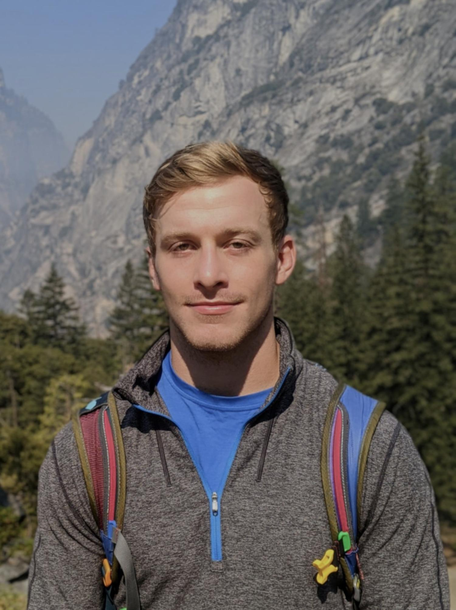

Maxwell T. Elling
Currently CU Boulder, formerly NASA GISS
max.elling@colorado.edu
I'm a researcher studying climate variability and change, particularly in relation to societal impacts.
Currently, I'm an Atmospheric and Oceanic Sciences PhD candidate at the University of Colorado Boulder, where I'm researching the impacts of climate variability on malaria in Malawi and building a global climate-health risk index. Previously, I was at NASA Goddard Institute for Space Studies, where I evaluated climate models with a focus on climate extremes and other impact-relevant metrics, and developed software.
My approach combines climate observational records and model output with health and socioeconomic data to address fundamental questions about how climate variability and change impact people, exploring both past impacts and future risks. I believe in scientific research with a focus on implications for society and I am a strong advocate for interdisciplinary research.
view my work
Papers
Journal articles (published)
Geophysical Research Letters, 2025
Sydney M. Kramer, Kristopher B. Karnauskas,
Maxwell T. Elling, Lei Zhang, Heng Liu, Yanying Chen, Dillon J. Amaya, Larissa Nazarenko, Wenchang Yang, Gabriel A. Vecchi, Dervla Meegan-Kumar, Jane W. Baldwin, Dhrubajyoti Samanta
Atmosphere, 2025
Larissa S. Nazarenko, Nickolai L. Tausnev, and
Maxwell T. Elling
Nature communications, 2025
Yi Yao, Agnès Ducharne, Benjamin I. Cook, Steven J. De Hertog, Kjetil Schanke Aas, Pedro F. Arboleda-Obando, Jonathan Buzan, Jeanne Colin, Maya Costantini, Bertrand Decharme, David M. Lawrence, Peter Lawrence, L. Ruby Leung, Min-Hui Lo, Narayanappa Devaraju, William R. Wieder, Ren-Jie Wu, Tian Zhou, Jonas Jägermeyr, Sonali McDermid, Yadu Pokhrel,
Maxwell T. Elling, Naota Hanasaki, Paul Muñoz, Larissa S. Nazarenko, Kedar Otta, Yusuke Satoh, Tokuta Yokohata, Lei Jin, Xuhui Wang, Vimal Mishra, Subimal Ghosh & Wim Thiery
Communications Earth & Environment, 2025
Bjørn H. Samset, Laura J. Wilcox, Robert J. Allen, Camilla W. Stjern, Marianne T. Lund, Sharar Ahmadi, Annica Ekman,
Maxwell T. Elling, Luke Fraser-Leach, Paul Griffiths, James Keeble, Tsuyoshi Koshiro, Paul Kushner, Anna Lewinschal, Risto Makkonen, Joonas Merikanto, Pierre Nabat, Larissa Narazenko, Declan O’Donnell, Naga Oshima, Steven T. Rumbold, Toshihiko Takemura, Kostas Tsigaridis & Daniel M. Westervelt
Journal articles (submitted/in review)
Tropical oceans drive Malawi’s malaria risk
Submitted, Nature Communications
Maxwell T. Elling, Kristopher Karnauskas, Megan Kowalcyk, Donnie Mategula, James Chirombo, Ben Livneh, Robert McCann, Andrea Buchwald
An Impact-Driven Framework for Climate Model Evaluation Reveals Biases in NASA GISS ModelE Configurations
Under review, Climatic Change
Maxwell T. Elling, Alex C. Ruane, Manishka de Mel, Jeffrey Jonas, Sanketa Kadam, Nancy Y. Kiang, Keren Mezuman, Larissa Nazarenko, Nick Pelaccio, Meridel Phillips, Anastasia Romanou, and David Rind
Technical reports
Edward Carr, Samantha McCabe,
Maxwell T. Elling, Pamela Martínez-Loustalot
Edward Carr, Samantha McCabe,
Maxwell T. Elling
Edward Carr, Samantha McCabe,
Maxwell T. Elling
Edward Carr, James J. Winebrake, Samantha McCabe,
Maxwell T. Elling
Edward Carr, James J. Winebrake, Samantha McCabe,
Maxwell T. Elling, Erin H. Green
Edward Carr, James J. Winebrake, Samantha McCabe,
Maxwell T. Elling
Edward Carr, James J. Winebrake, Samantha McCabe,
Maxwell T. Elling
Bryan Comer, Samantha McCabe, Edward Carr,
Maxwell T. Elling, Elise Sturrup, Bettina Knudsen, Jorg Beecken, James J. Winebrake
Edward Carr, Samantha McCabe,
Maxwell T. Elling, James J. Winebrake
Projects
Other projects & tools I've helped build
2025
Climate Action Knowledge Exchange (CAKE) is an interdisciplinary climate community I am building with a couple colleagues. We are currently bringing together climate professionals across disciplines (science, policy, engineering, and more) to collaborate on climate issues and form partnerships.
2024
GREENT is a user-friendly, web-based tool that enables users to evaluate emissions and energy consumption from intermodal transportation. It is basically Google Maps, but for intermodal freight transportation, with in-depth carbon emissions tracking.
2024
Chatbot tailored for marine policy, fuel standards, shipping, and emissions inquiries
2023
SAFE-T provides tools enabling shippers to track fuel use and emissions, compare the carbon intensity of different shipping routes, and compare properties of conventional and alternative marine fuels.
CV
Where I learned, what I did...
Education
PhD in Atmospheric and Oceanic Sciences
University of Colorado Boulder, (expected 2027)
MA in Climate and Society
Columbia University, 2021
BA in Financial Economics
Columbia University, 2015-2019
Experience
Graduate Research Assistant
University of Colorado Boulder, 2024-
Scientific Programmer / Analyst
NASA Goddard Institute for Space Studies, 2023-2024
Scientific Programmer
NASA Goddard Institute for Space Studies, 2021-2023
Graduate Research Assistant
International Research Institute for Climate and Society, 2021
Graduate Research Assistant
Sabin Center for Climate Change Law, 2021
Graduate Research Assistant
Lamont Doherty Earth Observatory, 2020-2021
Derivatives Trader
TPICAP, 2019
Fintech Intern
Investment Technology Group, 2018
Service